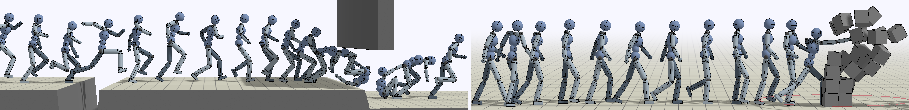

(1) University of California, Berkeley(2) Shanghai Jiao Tong University
*Joint first authors.

Abstract
Synthesizing graceful and life-like behaviors for physically simulated characters
has been a fundamental challenge in computer animation. Data-driven
methods that leverage motion tracking are a prominent class of techniques
for producing high fidelity motions for a wide range of behaviors. However,
the effectiveness of these tracking-based methods often hinges on carefully
designed objective functions, and when applied to large and diverse motion
datasets, these methods require significant additional machinery to select the
appropriate motion for the character to track in a given scenario. In thiswork,
we propose to obviate the need to manually design imitation objectives and
mechanisms for motion selection by utilizing a fully automated approach
based on adversarial imitation learning. High-level task objectives that the
character should perform can be specified by relatively simple reward functions,
while the low-level style of the character’s behaviors can be specified
by a dataset of unstructured motion clips, without any explicit clip selection
or sequencing. For example, a character traversing an obstacle course might
utilize a task-reward that only considers forward progress, while the dataset
contains clips of relevant behaviors such as running, jumping, and rolling.
These motion clips are used to train an adversarial motion prior, which specifies
style-rewards for training the character through reinforcement learning
(RL). The adversarial RL procedure automatically selects which motion to
perform, dynamically interpolating and generalizing from the dataset. Our
system produces high-quality motions that are comparable to those achieved
by state-of-the-art tracking-based techniques, while also being able to easily
accommodate large datasets of unstructured motion clips. Composition of
disparate skills emerges automatically from the motion prior, without requiring
a high-level motion planner or other task-specific annotations of
the motion clips. We demonstrate the effectiveness of our framework on
a diverse cast of complex simulated characters and a challenging suite of
motor control tasks.